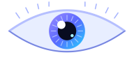

ENTRADA VISUAL
Normal
👁️ Olho esquerdo
Visão nítida e cores preservadas.

Ciência • Tecnologia • Sustentabilidade
Da Câmara Escura às Câmeras Modernas
Projeto Sou Cientista • EREM Padre Nércio Rodrigues • 2ºAAlterne entre o corte de perfil e a vista de frente. Toque nas estruturas e mexa na luz para ver a pupila mudar.
De frente você vê a córnea, a íris e a pupila. Cristalino, retina, fóvea e nervo óptico aparecem no corte de perfil.
Uma visualização 3D educativa de como o olho funciona.
Observe como a luz forma uma imagem invertida ao atravessar um pequeno furo.
A luz refletida pela casa passa pelo furo e chega invertida ao anteparo.
Vendo o anteparo de frente, a imagem da casa aparece de cabeça para baixo.
A imagem é invertida porque os raios de luz se cruzam ao passar pelo furo.
A luz se propaga em linha reta. A luz refletida pela casa atravessa o pequeno furo e forma uma imagem no anteparo dentro da caixa.
Os raios que vêm do alto da casa chegam à parte inferior do anteparo, enquanto os raios da parte inferior chegam à parte superior.
Um furo pequeno tende a produzir uma imagem mais nítida, mas menos luminosa. Um furo grande deixa entrar mais luz, porém pode deixar a imagem borrada.
Nos dois casos, a luz entra por uma abertura e forma uma imagem invertida. No olho, a retina recebe a imagem; na câmara escura, ela aparece no anteparo.
Explore os componentes de uma câmera fotográfica e descubra como ela registra a luz.
Toque em uma parte do desenho para conhecer sua função.
Este esquema representa uma câmera reflex (DSLR). Câmeras digitais sem espelho possuem uma construção interna diferente.
Curvas simplificadas, só para fins didáticos. O cérebro compara os três sinais para formar a cor percebida.
Telas e sensores usam síntese aditiva: vermelho + verde + azul no máximo formam o branco. Impressoras usam a subtrativa (ciano, magenta e amarelo).
| Olho | Analógica | Digital |
|---|---|---|
| Pupila / íris | Diafragma | Diafragma |
| Córnea e cristalino | Objetiva | Objetiva |
| Retina | Filme | Sensor |
| Reações bioquímicas | Reações químicas (prata) | Efeito fotoelétrico (silício) |
| Cérebro | Laboratório | Processador |
Configure cada olho separadamente e veja como as diferenças podem alterar a percepção visual.
Visão nítida e cores preservadas.
Visão nítida e cores preservadas.
As duas entradas visuais apresentam pouca diferença nesta simulação.
Os valores em dioptrias representam uma simulação didática. Catarata, glaucoma e daltonismo não são definidos por “grau” da mesma forma que miopia, hipermetropia e astigmatismo.
Uma visualização 3D/2,5D educativa de como duas entradas visuais podem ser combinadas em uma única percepção.
Os dois olhos estão recebendo imagens semelhantes. O cérebro pode comparar pequenas diferenças entre elas para contribuir para a percepção de profundidade.
Toque em um elemento para ver onde ele aparece e como descartar com segurança.
Os cristais de brometo de prata (AgBr) absorvem luz e liberam elétrons: Ag⁺ + e⁻ → Ag⁰. Os pequenos grupos de prata formam a imagem latente, ainda invisível.
O revelador é um agente redutor. Ele reduz os cristais que já têm prata latente a prata metálica (preta), amplificando a imagem. É uma reação de oxirredução.
O fixador (tiossulfato de sódio, Na₂S₂O₃) dissolve o AgBr que não foi exposto, formando um complexo solúvel. Assim o filme deixa de ser sensível à luz.
No silício, um fóton com energia suficiente (acima de cerca de 1,1 eV) liberta um elétron e cria uma lacuna. A carga acumulada em cada pixel é medida e vira o valor do pixel (efeito fotoelétrico interno).
Ao carregar e descarregar, íons Li⁺ migram entre os eletrodos enquanto os elétrons passam pelo circuito externo. Baterias danificadas ou descartadas de forma errada podem aquecer e pegar fogo.
0 de 5 passos concluídos
Pontos de coleta de eletrônicos, lojas e fabricantes com logística reversa, ou cooperativas de reciclagem.
Pontos de coleta específicos, geralmente em lojas e supermercados. Nunca no lixo comum.
Contêm vapor de mercúrio e precisam de coleta específica, sem quebrar.
Reveladores e fixadores contêm substâncias que não devem ir para o esgoto. Procure coleta especializada de resíduos químicos.
Metais como chumbo, mercúrio e cádmio podem contaminar solo e água quando eletrônicos são descartados de forma incorreta.
Alguns metais se acumulam nos seres vivos e aumentam de concentração ao longo da cadeia alimentar, afetando animais e pessoas.
Reciclar recupera metais valiosos (como cobre, prata e ouro) e reduz a necessidade de nova mineração. Isso também poupa energia.
A Política Nacional de Resíduos Sólidos (Lei 12.305/2010) prevê a logística reversa: fabricantes, comerciantes e consumidores compartilham a responsabilidade pelo destino dos produtos.
Toque em cada marco para abrir.
O cientista Ibn al-Haytham (Alhazen) descreveu e estudou a câmara escura em seu Livro de Óptica, explicando a formação de imagens pela propagação retilínea da luz.
Nicéphore Niépce registrou uma imagem que se manteve, usando uma câmara escura e uma placa sensível à luz, com longa exposição.
Louis Daguerre apresentou seu processo, que reduziu o tempo de exposição e popularizou a fotografia.
George Eastman lançou a câmera Kodak com filme em rolo, tornando a fotografia acessível ao público.
Steven Sasson, engenheiro da Kodak, construiu um protótipo de câmera digital com sensor CCD.
Os primeiros celulares com câmera chegaram ao mercado por volta de 2000. Hoje, sensores, lentes e processamento por software cabem em um aparelho de bolso.